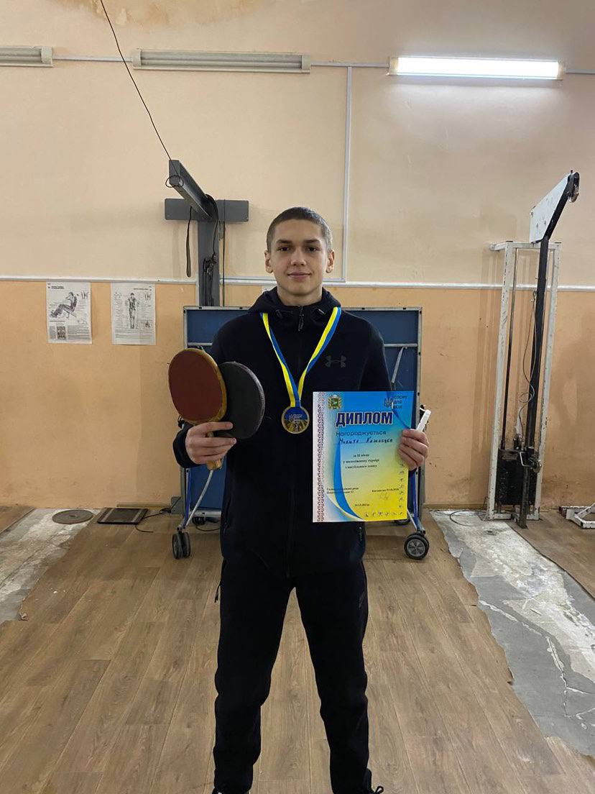

Мої захоплення та досягнення
- Риболовля: одного разу я зловив коропа вагою понад 10 кг — це мій рекорд і джерело гордості!
- Футбол: обожнюю грати у футбол з друзями на майданчику, відчуваючи командний дух і азарт гри.
- Теніс: я грав у настільний теніс і навіть брав участь у змаганнях, де отримав гарний досвід та знайомства.
- Тхеквондо: ще в шкільному віці я займався тхеквондо, брав участь у змаганнях та неодноразово здобував призові місця. Цей вид спорту навчив мене дисципліни та витривалості.

Я завжди прагну до нових знань, активно беру участь у "Курсантське життя" та мрію про великі досягнення у майбутньому.
← Назад на головну